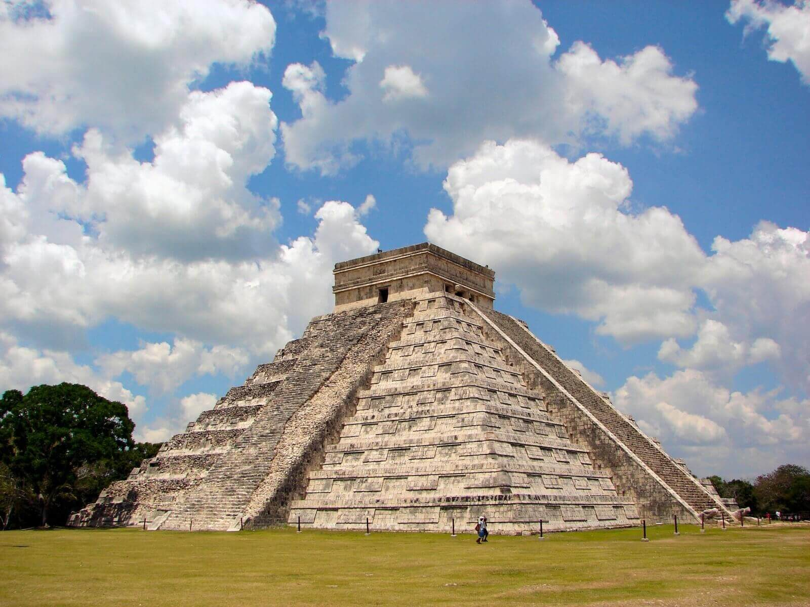
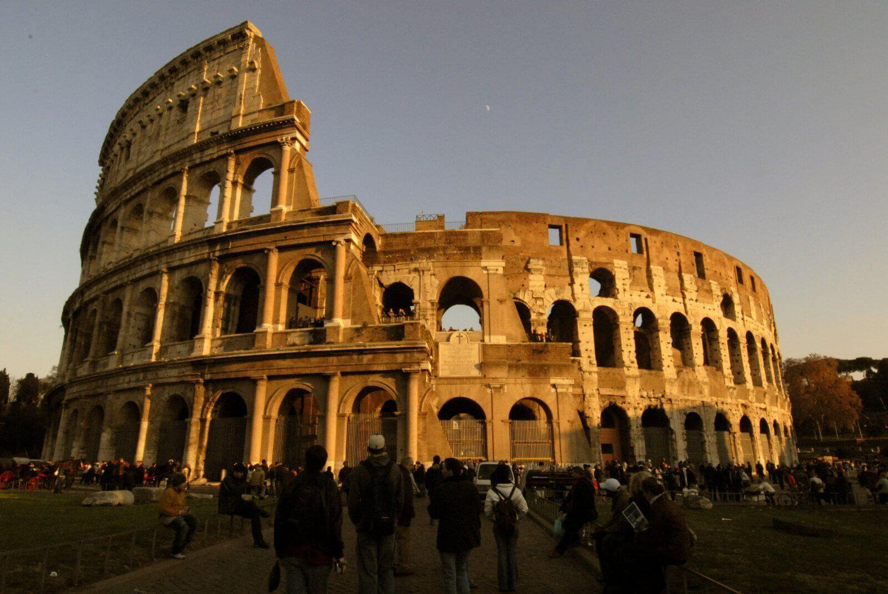
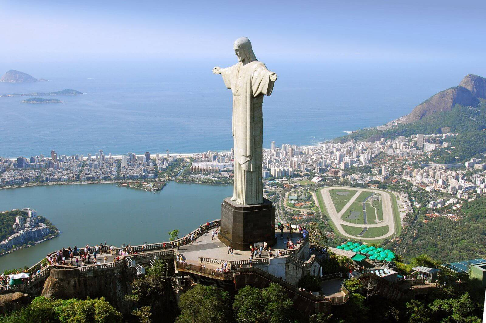
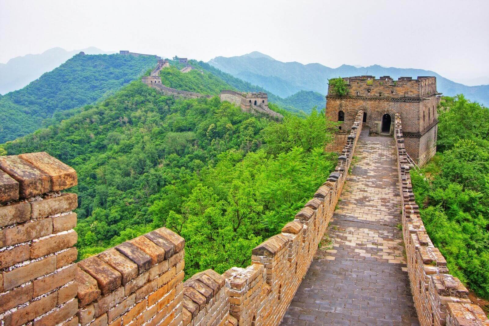
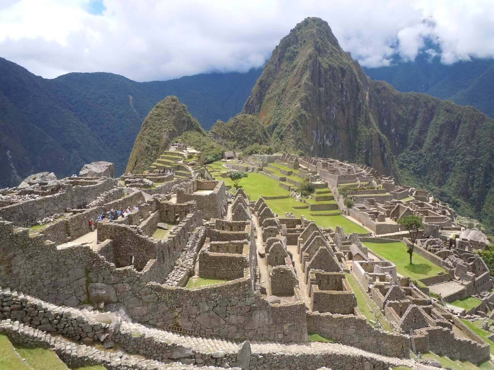
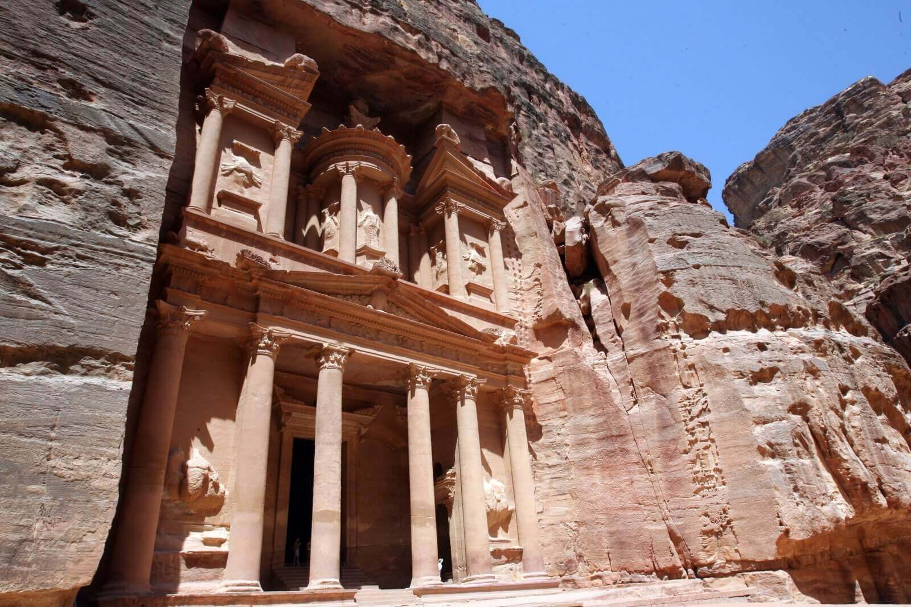
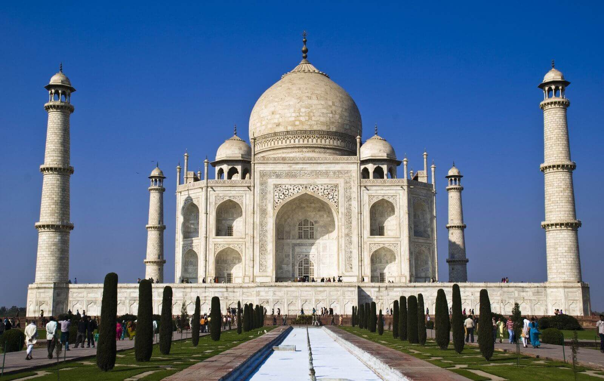

Esta es una de las principales y más importantes zonas arqueológicas que se asientan sobre la península del Yucatán en México, además de ser una de las mayores expresiones artísticas y culturales de la cultura Maya. La construcción más llamativa es la pirámide de Kukulcán, también conocida como “el Castillo”, que es la construcción más grande que encontramos en esta zona y que se halla rodeada por otros edificios de menor tamaño. Este lugar maya fue un centro ceremonial así como una ciudad de gran importancia para la cultura Maya, donde realizaron grandes hallazgos, sobre todo astronómicos.
2. El Coliseo de Roma

En el anfiteatro Flavio se celebraban batallas de gladiadores, representaciones navales y luchas con animales, un entretenimiento para el pueblo romano que fue mandado a construir por el emperador Vespasiano pero fue inaugurado por su hijo, Tito Flavio. Ha sufrido algunos destrozos, el primero cuando Roma padeció un intenso incendio que destruyó el anfiteatro y parte de la ciudad. Nerón, el supuesto artífice del incendio, retomó la idea de reconstruir el anfiteatro y empezó a llamarse popularmente Coliseo. En la actualidad tiene ese aspecto porque durante la II Guerra Mundial cayó una bomba cerca de la construcción que produjo graves daños…
3. Cristo Redentor

En medio de un paisaje abrumador se encuentra el Cristo Redentor, también conocido Cristo de Corvocado, y es sin duda una de las Maravillas del Mundo Moderno. Una imponente estatua que mide 38 metros y que vigila desde lo alto y con los brazos abiertos a toda la ciudad de Brasil. Situado a 710 metros sobre el nivel del mar, esta estatua nos ofrece uno de los paisajes más asombrosos que podamos observar en el mundo, los llamados “paisajes cariocas”, que también son Patrimonio de la Humanidad, y donde podemos ver con fascinación la impetuosa figura con la ciudad, las montañas y el mar de fondo.
4. La Gran Muralla China

Siglos y siglos tardaron en construir esta Gran Muralla China que se extiende desde el golfo de Bo Hai hasta la provincia de Xinjiang. A pesar de que no se sabe con exactitud la longitud que alcanza se conoce que son más de 7.300 kilómetros, así como entre 6 y 10 metros de alto y entre 4 y 5 metros de ancho, toda una gran construcción. Algunos tramos están perfectamente conservados mientras que en otros solo quedan ruinas, aún así es un reclamo turístico muy importante y se puede recorrer a pie gran parte de esta Gran Muralla.
5. Machu Picchu

Las ruinas de Machu Picchu desvelan la historia de una de las civilizaciones más enigmáticas que han poblado Latinoamerica. Machu Picchu significa “Montaña Vieja” y se trata de un conjunto arqueológico construido por los Incas. No se sabe demasiado acerca de esta cultura incaica pero el legado que han dejado alrededor de Perú y de otros lugares donde encontramos ruinas incas, suponen un gran tesoro para la humanidad, siendo esta construcción, el Santuario Sagrado de Machu Picchu, la máxima expresión de esta misteriosa civilización.
6. La Ciudad de Petra

“Una ciudad de color rojizo tan antigua casi como el mismo tiempo”, así es Petra, el mayor tesoro de Jordania, el lugar que deja boquiabiertos a todos aquellos que tienen el placer y el honor de conocerla y observar su belleza tanto por fuera como por dentro. Se trata de una enorme ciudad excavada, sacada de debajo de la tierra como cualquier tesoro enterrado. La fascinación que se siente al observar la fachada tallada sobre las rocas de color rojizo es abismal, realmente es un lugar de ensueño, un lugar que merece la pena conocer.
7. El Taj Mahal

El Taj Mahal, que significa “El Palacio de la Corona”, construido entre los años 1630 y 1654, es un extraordinario complejo arquitectónico mandado a construir por el emperador Shah Jahan en honor a su esposa favorita Mumtaz-i-Mahal que falleció en 1629 al dar a luz a su decimocuarta hija. Es un edificio de gran belleza y muy impactante que refleja varias influencias, como la islámica, la persa, la india y la turca y el resultado no puede ser más maravilloso.